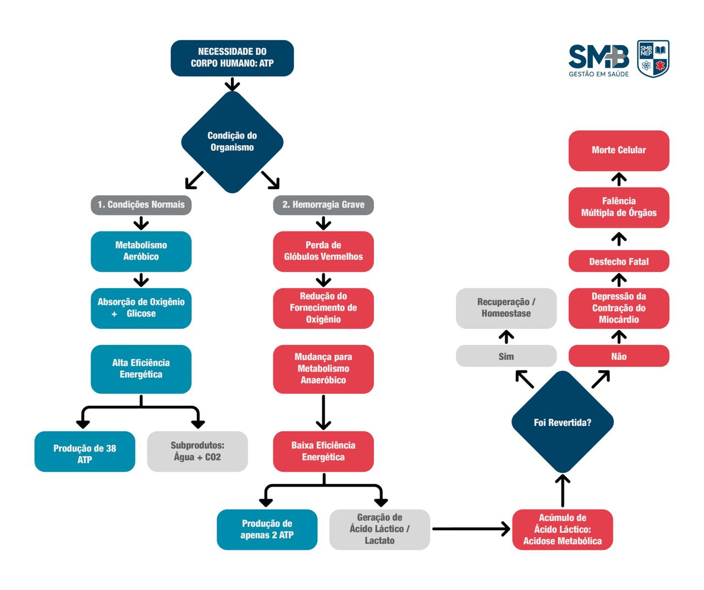

A segurança é o primeiro passo absoluto em qualquer emergência. Você não pode ajudar um ferido se também se tornar uma vítima.
No PHTLS, a letra "X" (do protocolo XABCDE) representa a hemorragia exsanguinante externa. O controle desse sangramento tem prioridade sobre a abertura de vias aéreas (A), pois a perda severa de sangue pode ser fatal em apenas 3 a 5 minutos.
Ocorre quando o sangue provém de uma grande artéria, que transporta sangue com muita força e pressão a partir do coração. É caracterizado por um fluxo em jato (pulsátil), cor vermelho-vivo e rápida formação de grandes poças de sangue ou roupas completamente encharcadas.
Sangue de cor vermelho-escuro que flui de forma contínua e com menor pressão. Embora seja mais lento que o arterial, a lesão de grandes veias pode ser igualmente letal e exige controle imediato.
Escorre de forma lenta e superficial (exsudação), geralmente causado por abrasões. É facilmente controlado e raramente representa risco à vida.
O choque é um estado patológico onde ocorre um desequilíbrio entre a oferta e a demanda de oxigênio celular. Ele é definido como a perfusão (entrega de sangue) e oxigenação insuficientes em nível celular.
O corpo humano precisa de energia na forma de trifosfato de adenosina (ATP). Em condições normais, as células absorvem oxigênio e glicose para realizar o metabolismo aeróbico, um processo altamente eficiente que produz 38 moléculas de ATP por molécula de glicose, gerando apenas água e dióxido de carbono como subprodutos.
Quando há hemorragia grave, a perda de glóbulos vermelhos reduz o fornecimento de oxigênio às células. Sem oxigênio, as células são forçadas a mudar para o metabolismo anaeróbico, que produz apenas 2 moléculas de ATP (uma queda dramática na energia) e gera ácido láctico (lactato) como subproduto. O acúmulo de ácido láctico causa acidose metabólica. Se não for revertida, a acidose deprime a contração do miocárdio, causa a morte celular e leva à falência múltipla de órgãos.
Para agravar o quadro, o sangramento e o choque acionam a Tríade Letal do Trauma:
Causada pelo metabolismo anaeróbico, causando diminuição da contração miocárdica.
A perda de sangue diminui a capacidade do corpo de regular a temperatura, e a hipotermia prejudica drasticamente a cascata de coagulação.
A perda de fatores de coagulação pelo sangramento, aliada à acidose e à hipotermia, impede a formação de coágulos, piorando ainda mais a hemorragia.

A classificação do choque hemorrágico para um adulto médio (com cerca de 5 litros de sangue) é dividida em 4 classes (PHTLS 10ª edição):
| Parâmetros Clínicos | Classe I | Classe II | Classe III | Classe IV |
|---|---|---|---|---|
| Perda de Sangue (mL) | < 750 mL | 750 - 1.500 mL | 1.500 - 2.000 mL | > 2.000 mL |
| Perda de Sangue (%) | < 15% | 15% - 30% | 30% - 40% | > 40% |
| Frequência de Pulso | Normal | Aumentada | Muito Aumentada | Severamente Aumentada |
| Pressão Arterial | Normal | Normal | Diminuída | Muito Diminuída |
| Pressão de Pulso | Normal | Diminuída | Diminuída | Diminuída |
| Estado Mental | Levemente Ansioso | Ansioso | Ansioso / Confuso | Confuso / Letárgico |
| Excesso de Base | 0 a -2 | -2 a -6 | -6 a -10 | Mais que -10 |
Além da resposta aos fluidos, atualmente o ATLS 11ª edição simplifica o choque hemorrágico ensinando a cascata em 3 estágios fisiológicos fáceis de identificar no pré-hospitalar, agrupando os 4 graus antigos:
O Índice de Choque (Shock Index - SI): Uma métrica rápida e crucial para equipes de APH identificarem o choque oculto antes da queda da pressão arterial (que ocorre tardiamente no trauma).
Frequência Cardíaca (FC) ÷ Pressão Arterial Sistólica (PAS).
O reconhecimento clínico baseia-se na identificação da resposta compensatória do corpo (ativação do sistema nervoso simpático e liberação de catecolaminas).
Alinhado ao "X" do PHTLS, a intervenção nos primeiros 60 segundos é o que salva a vida. Aplique o algoritmo ABC:
Ligue para o 192 (SAMU) ou 193 (Bombeiros).
Localize a origem exata do sangramento grave, cortando roupas se necessário.
Aplique uma das três técnicas abaixo, dependendo do local e da gravidade da lesão.
Deve ser o primeiro passo. Consiste em aplicar pressão firme e contínua diretamente sobre a ferida usando um pano limpo ou gaze. É crucial manter a pressão firme até a chegada da ajuda ou até a transição para outra técnica, e nunca levantar o curativo para verificar se o sangramento parou. Esta é a principal técnica para áreas onde torniquetes não se aplicam (tórax, abdome, pescoço, couro cabeludo, virilha.
Utilizado quando a pressão direta externa não é suficiente ou em feridas profundas e juncionais. Envolve introduzir gaze ou pano limpo diretamente e profundamente na cavidade da ferida, o que cria pressão de dentro para fora. Após preencher a ferida, é obrigatório aplicar pressão direta firme sobre o material introduzido.
Utilizado para sangramentos graves e com risco de vida em extremidades (braços e pernas) quando a pressão direta falha ou é impraticável.
Os equipamentos modernos focam no controle mecânico ou químico do sangramento. Procure dispositivos certificados por órgãos como o Comitê de Trauma do ACS ou pelo DoD. O uso de equipamentos improvisados não é recomendado, pois não há garantia de eficácia e podem causar mais lesões.
| Material / Equipamento | Função e Ação | Modo de Uso |
|---|---|---|
| Kits de Controle de Sangramento (Bleeding Control Kits) | Oferecem os recursos essenciais em um pacote único para socorristas. Contêm luvas de proteção, materiais para curativo e preenchimento, e torniquetes aprovados. | Disponíveis em modelos individuais ou fixados em paredes (parecidos com gabinetes de DEA) em locais públicos. |
| Gazes (Simples ou Hemostáticas) | Atuam absorvendo sangue e criando volume no interior da ferida para aplicar pressão mecânica nos vasos rompidos. As versões hemostáticas contêm agentes que aceleram quimicamente a cascata de coagulação. | Inserir a gaze progressivamente na cavidade do ferimento até preenchê-lo por completo (wound packing). Finalizar exercendo pressão direta sobre o volume de gaze. |
| Torniquetes Comerciais Aprovados (ex: CAT, SOFTT-W) | Interrompem completamente o fluxo sanguíneo arterial e venoso ao comprimir os vasos sanguíneos contra o osso da extremidade. | Aplicar de 5 a 7 cm acima da lesão, passar a fita pela fivela, puxar firmemente para eliminar folgas e girar o molinete até o controle do sangramento. Nota: Torniquetes comerciais apresentam cores como preto, laranja e vermelho; modelos azuis são destinados estritamente a treinamento e não devem ser usados em emergências reais. |